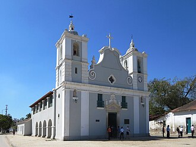
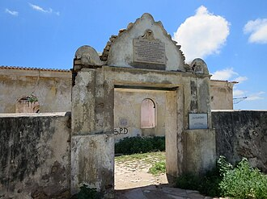
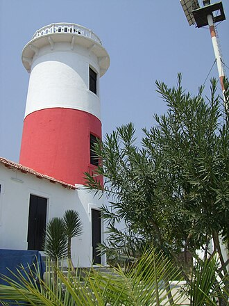
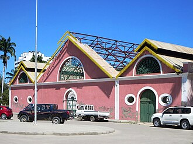
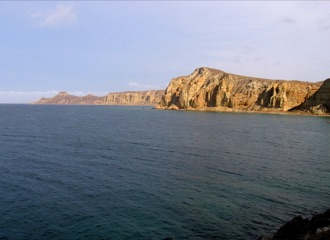
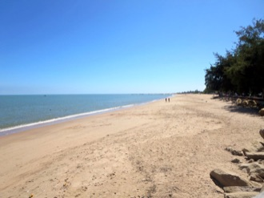
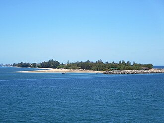
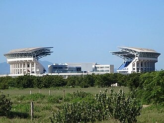
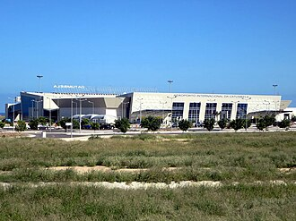

O que fazer em Benguela e no Lobito
25 lugares na província de Benguela (Benguela, Lobito, Catumbela e arredores).
Na página de cada lugar: horário, preço em Kwanza (quando conhecido), como chegar, as fontes e a data de verificação. Horários e preços mudam: confirme antes de ir.
Cultura e monumentos
-

Igreja de Nossa Senhora do Pópulo
Igreja barroca de 1748, das mais antigas de Benguela.
Foto: David Stanley from Nanaimo, Canada · CC BY 2.0
-

Reduto de São Pedro de Catumbela
Forte de 1846 sobre o rio Catumbela.
Foto: David Stanley from Nanaimo, Canada · CC BY 2.0
-

Farol do Lobito
Farol de 1915 à entrada da baía do Lobito.
Foto: Claus Bunks from Hamburg, Germany · CC BY-SA 2.0
-
Sé Catedral de Nossa Senhora de Fátima (Benguela)
A catedral de Benguela.
.jpg){kind=link}


Museus
-

Museu Nacional de Arqueologia de Benguela
Museu num antigo armazém de escravos junto ao mar.
Foto: David Stanley from Nanaimo, Canada · CC BY 2.0

Natureza
-
Colina da Saudade
Miradouro sobre o Lobito.
Praias
-

-

Praia Morena
A praia urbana mais conhecida de Benguela.
Foto: David Stanley from Nanaimo, Canada · CC BY 2.0
-

Restinga do Lobito
Praias de água limpa, restaurantes e bares no Lobito.
Foto: David Stanley from Nanaimo, Canada · CC BY 2.0
-
Praia da Hanha
Praia de pescadores na foz do rio Cubal.


.jpg){kind=link}
Restaurantes
-
Batuk Restaurante
Restaurante com zona de praia na Restinga do Lobito.
-
Luna Ocean Club
Praia, lounge e restaurante virados para o pôr do sol.
-
Tudo na Brasa
Conhecido pelo leitão à Bairrada.
Bares
-
Zulu
Bar na ponta da Restinga.
Discotecas
-
Katos Pub
Discoteca premiada em 2020.
Alojamento
-
Hotel Terminus
O hotel mais emblemático do Lobito, à beira-mar.
-
Hotel Praia Morena
Hotel histórico junto à Praia Morena.
-
Aparthotel Mil Cidades
Apartamentos no centro, com piscina e ginásio.
-
Apart Hotel Aurora
Apart-hotel na Restinga do Lobito, com vista de mar e piscina.
Centros comerciais
-
Kero Lobito
Hipermercado no Lobito.
Desporto
-

Estádio Nacional de Ombaka
Estádio do CAN 2010.
Foto: David Stanley from Nanaimo, Canada · CC BY 2.0
.jpg){kind=link}
Câmbio
-
NovaCâmbios (Lobito)
Câmbio de moeda no Lobito.
Saúde e hospitais
-
Hospital Geral de Benguela
Hospital público da cidade de Benguela.
Transportes
-

-
Estação do Lobito (Caminho de Ferro de Benguela)
Comboios para Benguela, Huambo, Cuíto e Luena.

Mais guias
- Agenda de eventos
- Câmbio do dia
- Como viajar entre cidades
- O que fazer em Luanda
- Restaurantes, bares e discotecas em Luanda
- Centros comerciais em Luanda
- Desporto e ginásios em Luanda
- O que fazer no Lubango e na Huíla
- O que fazer no Huambo
- O que fazer em Cabinda
- O que fazer no Namibe (Moçâmedes)
- O que fazer em Malanje
- Praias de Angola
- Parques nacionais de Angola
- Natureza e paisagens de Angola
- Museus de Angola
- Hotéis e alojamento em Angola
- Transportes em Angola: aeroportos, comboios e autocarros
- Casas de câmbio em Angola
- Hospitais e clínicas em Angola
Things to do in Benguela and Lobito
25 places in Benguela province (Benguela, Lobito, Catumbela and around). Each place page has opening hours, prices in Kwanza and directions. The Tuende app is available in Portuguese, English, French and Spanish.